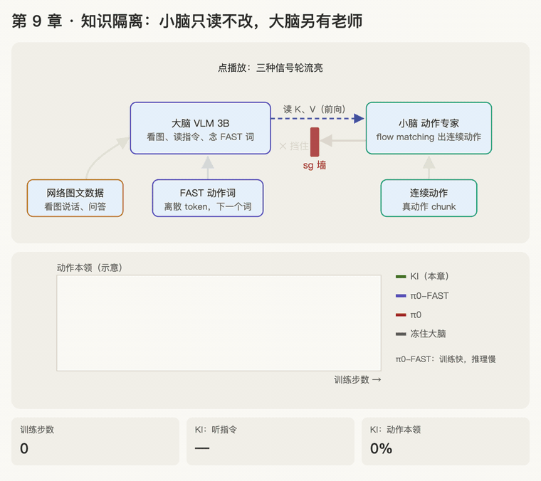
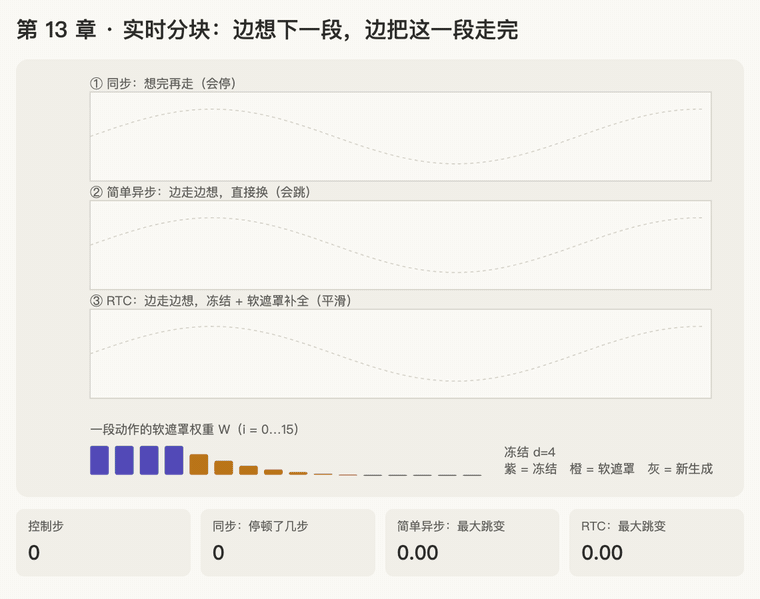
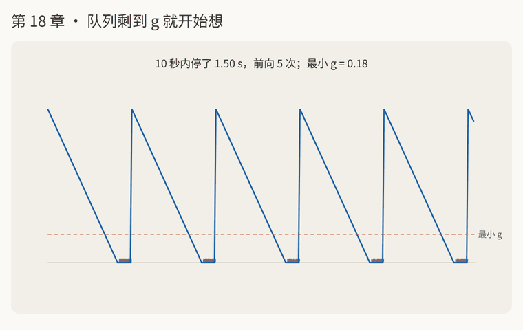

VLA 从零到 π0 · 讲义目录
在线阅读：https://wikieden.github.io/vla-from-scratch/
21 章 · 26 个动画（GIF + 可交互页面）· 42 张静态图 · 50 张复习卡片 · 覆盖 VLA 论文主线（RT-1 → π0 → π*0.6）与 2026 年的开源模型
这本书讲什么
从"机器人策略到底输入什么、输出什么"讲起：先讲行为克隆、动作分块、多峰这些老问题，再讲 VLM 怎么变成 VLA（动作当词、FAST、π0 的动作专家），然后是知识隔离、分层、隐动作、RL 后训练、实时执行；最后七章讲 2025–2026 的工程主题：微调配方（OFT）、跨本体、在线 RL、推理加速、评测、潜空间世界模型，以及怎么读懂一个新开源模型的 config。
- 适合谁：会一点 Transformer（向量、点积、attention），不需要机器人背景；用到的 RL、统计、旋转、系统知识，在那一章现场补，或链接到对应的书。
- 读完能做什么：拿到一个新 VLA，能说出它动作怎么出、大脑小脑怎么连、吃了什么数据；能估它跑多快、要多少显存、论文分数可不可信；能为自己的机器人选一个开源模型起步（对应里程碑 V-M0–V-M8）。
- 怎么读：按章顺序读。每章先看讲解和动画，再自己做练习，最后用复习卡片隔几天考自己。
全书反复问三个问题：动作怎么出、大脑小脑怎么连、吃了什么数据；再加两个工程问题：多快、能不能复现。
讲解的特点
- 一次一小步：每个概念按"白话类比 → 公式（每个符号说清楚怎么读）→ 小数字亲手算一遍"讲。
- 关键机制都有图和动画：结构和数据流画静态图（三块注意力、知识隔离的梯度路线、统一动作空间），数字之间的关系画图表（τ 的抽样分布、Wilson 区间、量化显存），要拖参数才看得出规律的做成可交互动画（chunk 长度、异步阈值、组内优势）。
- 对照原文：讲到论文的地方标本地文本行号（如 OFT 表 II L319–L360）；开源模型的细节对照 LeRobot、openpi、openvla-oft 的源码行号；编的数会写明"编的"。
- 保留真实的学习过程：练习与作答记录里是学习时的原话、对错和点评。
- 术语不设门槛：缩写第一次出现就给英文全称并逐词解释，全书缩写见 缩写与术语表，符号读法见 符号表。
- 每章都有代码对照：
solutions/chapter-code/一章一个 Python + NumPy 模块，配测试核对讲义里的数字和一本 notebook；只算讲过的例子，不提前给练习答案。 - 每章收尾有口诀：全部口诀汇总在本页末尾。
示例动画
 第 8 章 · π0 推理：大脑算一次存 K/V，小脑推 10 步 讲义 · ▶ 交互 |
 第 9 章 · 知识隔离：小脑只读不改，大脑另有老师 讲义 · ▶ 交互 |
 第 13 章 · RTC：同步会停、直接换会跳、RTC 平滑 讲义 · ▶ 交互 |
 第 15 章 · 并行解码：逐词念 vs 一次填满，吞吐 4.2 → 108.8 Hz 讲义 · ▶ 交互 |
 第 17 章 · GRPO：一组轨迹谁加分谁减分，全同组白跑 讲义 · ▶ 交互 |
 第 18 章 · 异步推理：队列剩到 g 就开始想 讲义 · ▶ 交互 |
全部动画和本地打开方法见 animations/README.md。
其他入口
- 复习卡片：../review.md（编号 V 开头；说"复习"时按间隔挑到期的卡片）。
- 缩写与术语表：appendix-glossary.md；符号读法：appendix-symbols.md。
- 代码对照：
solutions/chapter-code/（每章模块、测试和 notebook）。 - 学习计划与里程碑：../study-plan.md（阶段 A–H、V-M0–V-M8）。
- 面试资料：../interview/。
- 前置：《从零读懂 Transformer》；隐动作 / 世界模型接 《世界模型与 WAM 流派》；RL 基础接 《从零学强化学习》。
全流程总览
看一眼 + 听一句 ──▶ 策略 π ──▶ 一串动作 （第 1 章）
│
怎么学：照示范抄（BC）→ 一次出一段（chunk）→ 别求平均（多峰） （第 2–4 章）
│
大脑：VLM，图片切块和文字排队 （第 5 章）
│
动作怎么出：念词（256 格）→ 先压缩再念（FAST）→ 动作专家 flow （第 6–8 章）
│ └─ 一次填满 + L1（OFT，第 15 章）
别冲掉常识：知识隔离、π0.5 的数据配方 （第 9 章）
│
系统：慢想快做的分层；边想边做的 RTC；异步、跳层、量化 （第 10、13、18 章）
│
数据从哪来：跨本体统一动作表 · 视频里的隐动作 · 潜空间世界模型 （第 16、11、20 章）
│
模仿之后再变强：Recap（离线优势）· SimpleVLA-RL（在线 GRPO） （第 12、17 章）
│
全景与选型：主流模型 · 评测可信吗 · 2026 开源模型怎么选 （第 14、19、21 章）
| 步 | 做什么 | 为什么 |
|---|---|---|
| 1–4 | 策略、行为克隆、分块、多峰 | 所有 VLA 都站在这四个老问题上 |
| 5–8 | VLM 骨干，动作当词 → 动作专家 | "VL"和"A"怎么接起来、怎么够快 |
| 9–13 | 知识隔离、分层、隐动作、Recap、RTC | π0 之后的每一个关键改进 |
| 14 | 全景 | 用三个问题把前面串起来 |
| 15–21 | OFT、跨本体、在线 RL、加速、评测、潜空间世界模型、2026 开源模型 | 真要微调、部署、比较模型时会遇到的事 |
目录
| 章 | 主题 | 一句话精要 | 动画 | 卡片 | 状态 |
|---|---|---|---|---|---|
| 1 | 机器人策略是什么：看一眼、听一句、吐一串数 | VLA 的输入是图 + 指令，输出是一个 7 维动作向量，一秒重复很多次 | ▶ | V01–V02 | 完成 |
| 2 | 行为克隆：照着人类示范抄作业 | 训练就是看图答题；只见过人走的路，一走偏就越错越远 | ▶ | V03–V04、V17 | 完成 |
| 3 | 动作分块：看一眼，规划一整段 | 一次出 k 步，决定次数降到 1/k；想 50 步只走 5 步 | ▶ | V05–V07 | 完成 |
| 4 | 多峰：两种都对的做法，平均起来是错的 | L2 求平均会撞墙；生成模型抽一个，抽定了别变心 | ▶ | V08–V09 | 完成 |
| 5 | VLM：图片切块和文字一起排队 | 224 的图切成 256 个 token；PaliGemma = SigLIP + 线性投影 + Gemma | ▶ | V10–V11 | 完成 |
| 6 | 动作当词：每个数切成 256 格 | 每维切 256 格当词念；50 × 7 = 350 个词，念 8.3 秒 | ▶ | V12–V13 | 完成 |
| 7 | FAST：先压缩再变词 | 相邻 token 太像，模型学会抄上一个；DCT + BPE 先说形状再补细节 | ▶ | V14–V15 | 完成 |
| 8 | π0：大脑 + 小脑，动作专家 | VLM 前缀算一次存 K/V，300M 动作专家 flow matching 推 10 步，73 ms | ▶ ▶ ▶ ▶ | V16、V18–V24 | 完成 |
| 9 | 知识隔离与 π0.5：别让小脑冲掉大脑的常识 | 小脑读 K/V 但梯度不回传；大脑另学 FAST 词和图文；π0.5 五路数据两段训练 | ▶ ▶ ▶ | V25 | 已写，练习待作答 |
| 10 | 慢想快做：高层 1 秒想一次，低层每秒 50 个动作 | 高层写子任务、低层出动作；文字好懂，向量信息多 | ▶ | V27–V28 | 已写，练习待作答 |
| 11 | 没有动作标签：隐动作与世界模型 | 从两帧里猜一个小码当"动作词"，再用少量机器人数据学词 → 关节 | ▶ | V29–V30 | 已写，练习待作答 |
| 12 | RL 后训练 Recap：告诉模型"这段做得比平时好" | 价值函数估还要多久，优势贴 positive / negative，上场只说 positive | ▶ | V31–V32 | 已写，练习待作答 |
| 13 | 实时执行 RTC：边想下一段，边把这一段走完 | 走掉的 d 步冻住，剩下的按软遮罩照着补，不用重训 | ▶ | V33–V34 | 已写，练习待作答 |
| 14 | 主流 VLA 模型全景：架构、关键改进、优劣势 | 三个问题看懂任何 VLA；五条主线、四类动作头 | ▶ | V35–V36 | 已写，练习待作答 |
| 15 | OpenVLA-OFT：一次吐完所有动作，直接回归连续值 | 并行解码 + chunk 快 26 倍；L1 取中位数；FiLM 按指令调色 | ▶ | V37–V38 | 已写，练习待作答 |
| 16 | 跨本体：不同的机器人，怎么排进同一张动作表 | RDT 128 格按物理意义填；X-VLA 每个域 32 个软提示 | ▶ | V39–V40 | 已写，练习待作答 |
| 17 | 在线 RL：SimpleVLA-RL，只看成没成也能练 | GRPO 组内比较算优势；全同组白跑；pushcut | ▶ | V41–V42 | 已写，练习待作答 |
| 18 | 跑得快：异步推理、少看几眼、压小权重 | g ≥ (E[ℓ]/Δt)/n；计算量 ∝ token × 层；int8 慢反而掉点 | ▶ | V43–V44 | 已写，练习待作答 |
| 19 | 评测：97.1% 和 96.4%，到底谁更强 | Wilson 区间、两比例检验；分数饱和看难子项和扰动 | ▶ | V45–V46 | 已写，练习待作答 |
| 20 | 潜空间世界模型：VLA-JEPA | 在潜空间里预测未来，未来帧只当答案；推理不用世界模型 | ▶ | V47–V48 | 已写，练习待作答 |
| 21 | 2026 开源 VLA：读一份 config，选一个能微调的模型 | 五个字段读 config；20 / 26 / 55 / 128 格；全参 16 字节、LoRA 2 字节 | ▶ | V49–V50 | 已写，练习待作答 |
后续大纲
正文 21 章已写完。后面按学习进度补：
- 第 9–21 章的练习作答、点评，以及按答错的地方补卡片；
- 动手里程碑 V-M0–V-M8（见 study-plan）做完后，把结果表接回对应章节（V-M1 → 第 3 章、V-M2 → 第 6–7 章、V-M3 → 第 8 章、V-M7 → 第 13 章）。
口诀汇总
第 1 章 · 机器人策略是什么
看一眼，听一句，吐一串数；一秒吐很多次，吐完世界就变了。
第 2 章 · 行为克隆
人做一遍记一遍，看图答题对答案；
只学人走的路，一走偏就是没见过的路，越猜越偏。
第 3 章 · 动作分块
写字看一眼写一整字，机器人看一眼走一整段；决定少了，错得也少。
想得远，走得短：想 50 步、走 5 步，再看一眼。
第 4 章 · 多峰
左绕对，右绕也对，平均一下撞上去；
不求平均抽一个，抽到哪条走哪条；
抽定一边别变心，一段之内、画面提醒、接着旧计划。
第 5 章 · VLM
图片切成拼图块，一块一个 token，和文字排一队；
眼睛 SigLIP，视神经一层线性，大脑 Gemma；前缀互相看，回答往前看。
第 6 章 · 动作当词
尺子切 256 格，小数变编号，编号当词说出来；
一个字一个字地念，念得太慢。
第 7 章 · FAST
相邻太像，抄上一个就高分，什么都没学会；
先说形状再补细节，DCT 压一压，BPE 并一并，字少还有料。
第 8 章 · π0
大脑看图读指令，小脑出动作；同一会议室开会，各用各的权重。
大脑算一次存起来，小脑问路走十步；雾里起点随机，走进哪座山都行。
三排座位：同排互相听，后排听前排；前排听不见后排，所以前排算一次就够。
第 9 章 · 知识隔离与 π0.5
实习生干砸，老员工挨批改坏习惯；冻住老员工，又学不会新活。
知识隔离：小脑只读不改，大脑另有老师（FAST 词 + 图文数据）。
π0.5：九成多是别处经验，先念词后接小脑，先写子任务再出动作。
第 10 章 · 慢想快做
心里想路口，手上调方向：想得慢，做得快。
纸条好懂信息少，灌想法信息多看不懂。
先有动作再编话，倒推出高层的教材。
第 11 章 · 没有动作标签
视频多，动作缺：缺的那一栏自己猜。
两帧之间起个名，码本小，只记要紧的变化。
先学动作词，再学词到关节。
要么记代号，要么想画面。
第 12 章 · RL 后训练 Recap
看老师只能学到老师那样，自己练才能更好。
价值是导航的"还要多久"，优势是"比预计快了多少"。
好段贴正，差段贴负，上场只说"正"。
练、评、学，转几圈。
第 13 章 · 实时执行 RTC
说着这句想下句：停了冷场，硬接跑题。
走掉的冻住，剩下的照着补。
近的听旧计划，远的听新画面。
不重训，加引导，慢模型也能流畅。
第 14 章 · 主流 VLA 模型全景
看车看三样：发动机、变速箱、跑过的路。
念词有常识但慢，回归最快但不分峰，flow 多峰又顺，视频吃得最多。
没有全赢的模型，只有对得上的选择。
第 15 章 · OpenVLA-OFT
念号码一位一位，填空格一次填满，再一次填八步；
平方取平均站山谷，绝对值取中位站多数那座峰；
戴眼镜按指令调色，一开始眼镜是透明的。
第 16 章 · 跨本体
插座各国不一样，万能插座每孔标名；
报税表每栏一义，没有的就空着不算分；
翻译员是同一个，纸条说明是哪国人。
第 17 章 · 在线 RL
看录像学不会骑车，自己骑、只问到头没；
同题八人做，比平均好加分，差的减分；
全对全错没得比，扔掉再采；放宽上界、升温多试；
只看结果会抄近道，规矩要写进奖励。
第 18 章 · 跑得快
菜还剩三成就下新单，往返多久就留够几步；
读得长、读得遍数多就慢，少看几眼少算几层；
压成电子版省地方，翻页太慢反而误事。
第 19 章 · 评测
电脑题考千次分数稳，上真路考几次误差大；
十投七中，真实在四成到九成之间；
差距跟标准误比，比之前看是不是同一张卷子；
都考满分就换难卷、比速度。
第 20 章 · 潜空间世界模型
看视频学做菜，别学镜头怎么晃；
先翻译成"菜什么样"再比，像素抖动就不算数；
答案纸只给老师看，学生只看现在；
推理时陪练下场；人手视频不教新招，教你换个地方也稳。
第 21 章 · 2026 开源 VLA
看车先看行驶证：大脑、动作头、几步、几格、推几步；
收纳盒格子越细，越能装手和腰，接入就写清放哪格；
专科门诊挂四个号，医院大，看一个人用不了多少医生；
全参十六字节，LoRA 两字节，先量门框再搬家。